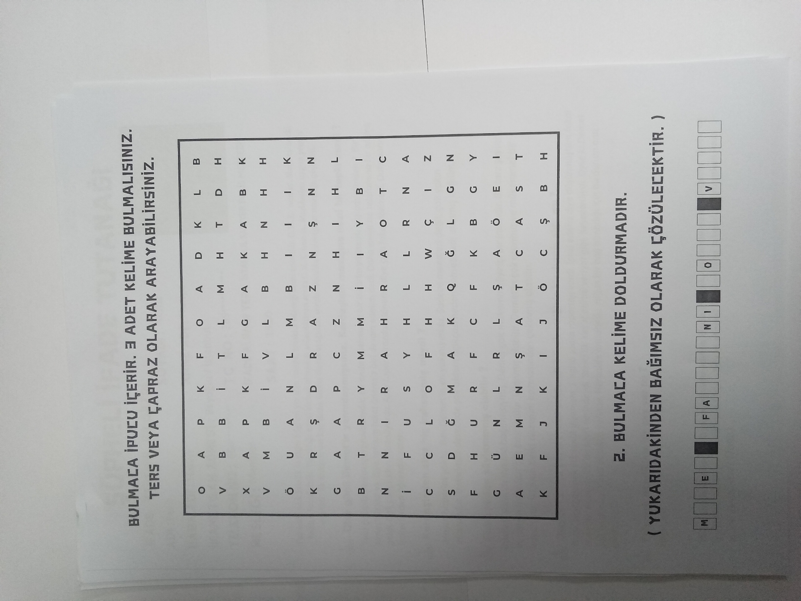

01 · Hadisə xülasəsi və qəzet xəbəri

02 · Mərhumun yazışmaları

04 · Bank sənədləri

05 · Telefon danışıqları

06 · Ölüm haqqında rəsmi sənəd

07 · Söz tapmaca ipucusu

08 · Şübhəli ifadəsi – Ferit Akyüz

09 · Şübhəli ifadəsi – Cenk Uzun

10 · Şübhəli ifadəsi – Murat Gezin

11 · Şübhəli ifadəsi – Melek Şahin

12 · Şübhəli ifadəsi – Emrah Bağcılar

13 · Şübhəli ifadəsi – Demet Güneş

14 · Şübhəli ifadəsi – Haydar Kurulmuş

15 · Şübhəli ifadəsi – Malik Bilgin